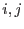
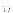
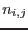
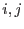
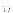
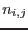
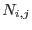
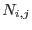
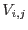
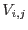

This task takes an event list and makes an image in which the value in each pixel is proportional to the variability with respect to time of the flux of events which fall within that pixel. The task cycles through all the events in the list which fall within the spatial extent of the image; for each of these events, a value  of the Kolmogorov-Smirnov statistic is calculated. The value of
of the Kolmogorov-Smirnov statistic is calculated. The value of  for the th pixel depends on both the cumulative number of events  within the whole image and the cumulative number  within the pixel. The formula for
for the th pixel depends on both the cumulative number of events  within the whole image and the cumulative number  within the pixel. The formula for  is
is
where  is the total number of events that fall within the image bounds and  is the total number of events that fall within the th pixel. (The value of
is the total number of events that fall within the image bounds and  is the total number of events that fall within the th pixel. (The value of  is easily found by counting all the events that fall within the image bounds; whereas can be read from the total flux image, provided that this is binned up to the same bounds and pixel size.) For each pixel, the raw variability image is formed from the maximum value of
is easily found by counting all the events that fall within the image bounds; whereas can be read from the total flux image, provided that this is binned up to the same bounds and pixel size.) For each pixel, the raw variability image is formed from the maximum value of  encountered for each pixel during the above procedure. The values  in the final variability image are obtained by using the weighting
encountered for each pixel during the above procedure. The values  in the final variability image are obtained by using the weighting
where
These last two formulae can be found within [1]
Pixels which have too few events for the KS statistic to be reliably calculated (see parameter cutoff) are set to the value of 0.827574; at this value of the Kolmogorov-Smirnov (KS) statistic, it can be shown that the probability that this value or higher results from a non-variable series is 50%. Note the implication that pixels having zero variability are not zero-valued in the output image.
Note that the KS statistic does not require any information about the time of occurrence of the events. It is therefore immune to gaps in the sequence (such as might be caused by good time interval (GTI) filtering) and not very sensitive to variability of the background. However there is some undesirable effect due to background variability. The KS statistic of a series of events measures the magnitude of the difference between the variability of that series and a reference series. In the present version of the task, the reference series is provided by the events occurring within the entire image bounds. If this is dominated by background flares, steady point sources will differ in variability from the reference through being less variable, but will nevertheless display high KS values. It is therefore recommended that the event list be filtered to remove events from periods in which background bursts occurred, before submitting the event list to evarimgen. A future version of evarimgen may contain a facility for performing this filtering within the task itself.
The statistic is, on the other hand, sensitive to the ordering of the events in time. Since event lists produced by the sas usually contain at least some out-of-order events, a facility has been provided within the task for sorting the events into time order. This is requested via the parameter sortevlist (which is `yes' by default). If sortevlist=no, evarimgen checks the ordering of the events and generates a warning if any out-of-order events are found. The sorting is internal to the task and in no circumstances is the event list modified.
The task as presently constructed does not handle well a situation in which a single bright source contributes most of the events. (However, this must be much brighter than simple intuition would suggest, since the sheer number of background pixels means that they nearly always provide the majority of events.) In this case, no matter how variable the source, evarimgen is likely to show it as only weakly variable, because it is largely being compared with itself. Future developments in the task may solve this problem.
A knowledge of , the total flux of events within each pixel, is necessary in order to calculate the Kolmogorov-Smirnov statistic. If a total-flux image has previously been calculated from the event list, this may be submitted to the task via the parameters withimageset and imageset. However at the moment it is better practice to calculate this within the task, so it is recommended that the default value of withimageset=no be used. In this case imageset is the name of the newly created output flux image, and therefore it may not be safe to leave this parameter at its default value. If withimageset=no and imageset happens to point to another file of the same name, the previous file may be overwritten.
The first priority for future development of evarimgen will be to allow the task to read the variability image size and pixel numbers from the input flux image, where this is supplied. The variability image would then automatically be compatible with an exposure map produced using the same image size settings, which is presently not the case. Lack of an exposure map or other mask image of the same dimensions prevents optimum application of the smoothing task asmooth to the output of evarimgen.